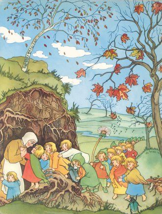

Sibyle von Olfers: de wortellkindertjes
Kleuters een besef van de bodem bijbrengen kan het beste met fantasie en mooie beelden. Intellectuele weetjes komen later wel. Hieronder het verhaal van de wortelkindertjes van Sibylle von Olfers.
Moeder aarde en de wortelkindertjes 
Onder de grond, diep in de aarde tussen de wortels van de bomen, zijn de wortelkindjes nog diep in slaap. Ze dromen over de zomer. Ze merken niets van de bijtende wind en de koude sneeuw. Maar als de sneeuw is gesmolten en het langzaam warmer begint te worden, gaat moeder Aarde met een kaars naar ze toe om ze wakker te maken. ‘Wortelkindjes, word eens gauw wakker’, roept moeder Aarde. ‘Pak jullie naald en draad. Jullie moeten alles in orde maken, want de lente komt eraan!’ De kindjes zijn nog een beetje slaperig, maar al gauw rekken ze zich lekker uit, woelen even door hun haar en wrijven het slaapzand uit hun oogjes. ‘Hoera!’, roepen ze, ‘Het wordt weer lente!’ Ze hebben er zo’n zin in om weer naar buiten te gaan en de hele dag te spelen tot de zon ondergaat.
Wortelkindjes, snel opstaan,
Want de lente komt er aan!
Aaahh, ze rekken zich eens lekker uit
En wrijven blij hun oogjes uit

Moeder Aarde heeft heel veel gekleurde lapjes meegebracht. Elk kindje mag een kleur uitkiezen. Het sneeuwklokje kiest zuiver wit en een bandje van groen, het klaprooskindje kiest rood voor haar jurkje, het boterbloemmeisje helder geel en het vergeet-mij-nietje kiest een hemelsblauw stofje.De wortelkindjes gaan gezellig bij elkaar zitten en beginnen met hun werkje. Ze werken goed door. Ze knippen, naaien en strijken tot hun jurkjes precies zo zijn geworden als ze willen en ze precies passen.
*Ze naaien zelf hun lenteklerendat hoeven ze niet meer te leren.Met naald en schaar en vingerhoed**Gaat dat werkje heel erg goed.*
Als ze klaar zijn lopen ze in een lange rij naar moeder Aarde. Een voor een laten de kindjes hun nieuwe kleren aan haar zien. Moeder Aarde kijkt over haar bril en zegt verbaasd: ‘Oh, zijn jullie nu al klaar? En wat is het allemaal prachtig geworden!’ Zelfs de mieren die de wol voor moeder Aarde aan het opwinden zijn, komen nieuwsgierig kijken. Zoiets moois hebben ze nog nooit gezien.
*Alle kindjes staan trots en blijbij moeder Aarde in de rij.Zij vindt alles prachtig versierd,**nu kan de lente worden gevierd!*
De worteljongetjes zijn intussen ook druk bezig. Zij verven de kevers met hun penselen, zodat ze straks in bonte kleuren rond kunnen vliegen. De lieveheersbeestjes worden rood met zwarte stipjes, de mestkever wordt zwart en extra glimmend geboend en het soldaatje krijgt een laagje bruinoranje verf. De hommels hebben lang geslapen, dus hun vachtje is helemaal in de war. Daarom worden ze lang geborsteld. Ze moeten er allemaal zo mooi mogelijk uitzien. Boven de grond wordt het land al een beetje groen en krijgen de bomen nieuwe blaadjes.
*De worteljongetje zijn intussenook al stevig aan het klussen.Met hun penselen en zonder te zeuren**geven ze de kevers weer mooie kleuren.*
En dan is het eindelijk echt lente. Moeder Aarde doet de deur wijd open en alle wortelkindjes en kriebelbeestjes mogen naar buiten, de lentewarmte in. In een lange rij gaan ze het land op. De wortelkindjes dragen hun witte, blauwe en gele bloempjes hoog boven hun hoofdjes en de grasjongens houden hun wapperende halmen goed overeind. De kevers lopen er gezellig tussen en kunnen bijna niet wachten om over het land te kruipen of de lucht in te vliegen.
*En als de lente haar intrede doet,trekken ze als een bonte stoetvan kevers, bloemen en grappige grassen,**vrolijk door ’t land met grote passen.*
In het grote bos is nu ook van alles gaan bloeien.De lelietjes-van-dalen openen hun knopjes en laten trots hun kleine belletjes rinkelen. Er vliegen al vlinders rond! Zij vinden het zo leuk om met elkaar in de lucht te stoeien. ‘Hallo wortelkindjes, welkom in het bos’, zegt de glibberslak langzaam. Het bosviooltje heeft nog nooit zoiets gezien en bekijkt hem eens goed vanaf haar veilige plekje achter de boom.
*In ’t bos, waar hoge bomen groeien,zijn lelietjes-van-dalen aan het bloeien.‘t Viooltje wil zich het liefst verschuilen,**want van die slak moet ze bijna huilen.*
Het is nu volop zomer. Een beekje stroomt kabbelend door de velden, terwijl de wind zachtjes door het riet aan de oever waait. ‘Kom eens bij me, waterjuffer!, roept het gele lismeisje en probeert de juffer te vangen, maar de waterjuffer speelt liever nog een tijdje in de lucht. Zie je dat de waterlelie zich door het water laat trekken alsof ze de koningin van de beek is? Zij zit daar heerlijk op haar blaadje te dobberen. Zo kan ze alles eens goed bekijken. ‘Kom, het is zo lekker in het water!’ zegt het vergeet-me-nietje tegen haar zusje, nadat ze voorzichtig met haar voetje heeft gevoeld of het water niet te koud is. Ze geeft haar een hand zodat zij ook het water in kan. De kevers vinden het maar lastig om daar tussendoor te krioelen en zeggen tegen elkaar: ‘Laten wij maar ergens anders gaan spelen, hier is het veel te druk!’
De hele dag spelen vergeet-me-nietjes
in de beek en zingen hun liedjes.
Een grasmannetje trekt de lelie in ’t wit
die vorstelijk op haar blaadje zit.

In de bloemenweide lijkt het wel altijd feest. De vlinders dansen boven de grassen en bloemen, die hand in hand al een hele tijd aan het dansen zijn. ‘Houd je goed vast aan je halm, grasje, anders val je naar beneden!’ De kevers maken er vrolijke muziek bij. Je kan zien dat ze allemaal heel veel plezier hebben om buiten in de zomerzon te spelen. Ze moeten er af en toe van zuchten: ‘Kon het maar altijd zomer blijven, dat zou pas fijn zijn!’
*Langs de groene weideranddansen de bloempjes hand in hand.De grassen en kevers vinden het zo fijn.**Ach, kon het maar altijd zomer zijn!*

Maar aan de zomer komt een eind. De herfstwind begint te waaien: ‘Hoei hoei, ga gauw naar huis wortelkindjes, want het wordt koud buiten!’ En hij rukt aan hun kleren, zodat ze bijna van hun lijfjes waaien. In een lange stoet lopen ze allemaal terug naar moeder Aarde. Ze staat al te wachten bij de deur en geeft elk wortelkindje en elke kever een dikke knuffel. ‘Welkom terug klaproosje, kom maar gauw naar binnen snuitkever en bijtje, het is warm en gezellig binnen. Jullie krijgen allemaal wat te eten en te drinken en dan gaan jullie een-twee-drie naar bed, totdat ik jullie weer wakker maak als de lente komt’. En alle wortelkindjes en beestjes kruipen naar beneden, in hun holletje onder de grond en beginnen aan hun lange winterslaap.
Dan komt de herfst met veel windgeruis.
Nu willen ze allemaal naar huis.
Hup, gauw naar bed, al het werk is klaar!
Jullie mogen uitslapen tot volgend jaar.
Wie is Sybille von Olfers?
De tekeningen in het boek zijn van Sibylle von Olfers. Ze maakte ze in 1905. Het boek straalt een ontwapenende eenvoud uit en is zo fantasierijk en kunstig uitgevoerd dat je nieuwsgierig wordt naar de kunstenaar die achter het boekje zit.
Sibylle von Olfers werd in 1881 geboren op het landgoed Metgethen bij Königsberg in Noord-Duitsland. Ze groeide op in een hecht gezin. Ze was de vijfde van in de rij van acht kinderen. Al vroeg werd duidelijk dat ze goed kon tekenen en veel fantasie had. Ze maakte boekjes met tekeningen voor haar jongere zus waar ze veel mee optrok en die tot veel plezier aanleiding gaven. Haar grootmoeder zei dat ze een wilde hommel was, maar ze was toch stiller en zachtaardiger dan de andere kinderen uit het gezin. Ze kon urenlang met penselen en potloden in een hoekje zitten. Haar tante Marie von Olfers die ook op Metgethen woonde was vaak op de waranda te vinden waar ze schilderde. In navolging van haar tante gaf Sibylle aan bloemen en sneeuwklokjes gezichten. Ze ontdekte ‘mosjongetjes’ en ‘dauwmeisjes’ zo schreef haar nichtje Hedwig von Lölhöffel. Marie von Olfers tekende de typische kinderkopjes met de ruige haartjes en de kapjes om het hoofd, die Sibylle blijkbaar van haar natekende. De neiging om de verborgenheden in de natuur te zoeken moet Sibylle met haar tante gemeen hebben.
Ze had heel jong al veel aandacht voor religie en maakte altaartjes met kaarsen er om heen.
Om financiële redenen moest de familie het landgoed verlaten en betrok een woning in Königsberg. Op 17 jarige leeftijd ging ze naar haar tante in Berlijn die haar verder leerde tekenen en schilderen. Op 21 jarige leeftijd trad ze in bij de Grijze zusters van de heilige Elisabeth. Haar oudere zuster Nina was daar ook ingetreden. Na twee jaar werd ze onderwijzeres op een school in Lübeck, maar kreeg ook les op een school voor kunst. Ze kopieerde daar veel werk van Italiaanse meesters. In deze periode kreeg ze tuberculose en vertrok naar een Kurhaus in het mooie plaatsje Gardone bij het Gardameer. Door de uitbraak van de eerste wereldoorlog moest ze in 1915 weer terug naar Lübeck. Driekwart jaar kon ze haar normale werk doen, maar met Kerst werd ze zieker en stierf na 4 weken op 34-jarige leeftijd.
Het boek de wortelkindertjes werd haar bekendste boek en een klassieker onder de kinderboeken. Het boek geeft een beeld van de geborgenheid in moeder aarde. Van hieruit volgt spelenderwijs de weg de wereld in en tenslotte een terugkeer naar de geborgenheid.
In de illustraties zijn invloeden herkenbaar van haar tante, van haar leraar Professor Leo Freiherr von Lütgendorf-Leinburg, landschapschilder en directeur van het Dommuseum in Lübeck en van de biedermeier cultuur. Ook de kinderboekjes van Ernst Kreidolf inspireerden haar waarschijnlijk. Verder is ze waarschijnlijk beïnvloed door Engelse kinderboeken. In de tijd van Jugendstil en impressionisme was er een diepgaande bezinning op de huiselijke omgeving en de schoonheid van de tuin. Ook de schoonheid van de natuur en het liefdevolle familieleven kwamen in de belangstelling. Anderen die in dezelfde geest in deze tijd prentenboeken maakten waren Elsa Beskov, Nelly Bodenheim, Astrid Lindgren, Rie Cramer, Henriёtte Willebeek, Beatrix Potter en Kate Greenaway. Niet alle werken van deze schrijfsters worden nu nog uitgegeven. De bijzondere stijl van het boek de wortelkindertjes spreekt velen nu nog aan en er zijn steeds herdrukken.
Bekijk ook een filmpje met de afbeeldingen en Duitse tekst. Wat ook kan is het filmpje af te spelen, het geluid uit te zetten en dan zelf het verhaal bij de afbeeldingen te vertellen.
Het boek met Nederlandse tekst is uitgegeven door uitgeverij Christofoor. Het is nu niet meer te koop, maar wordt mogelijk weer herdrukt.